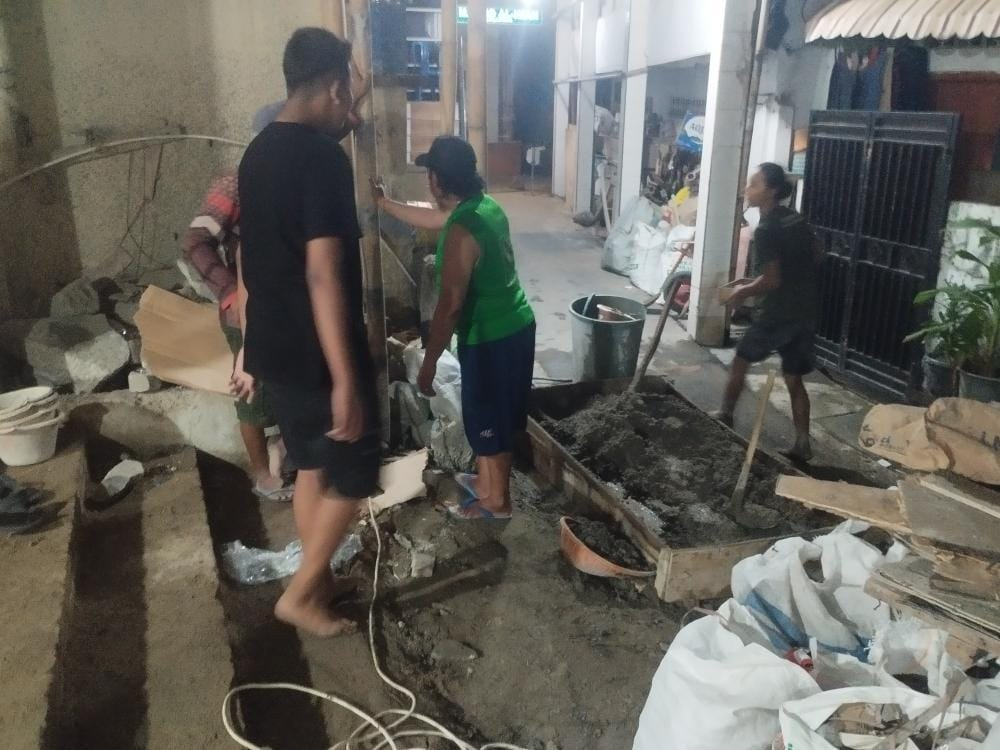
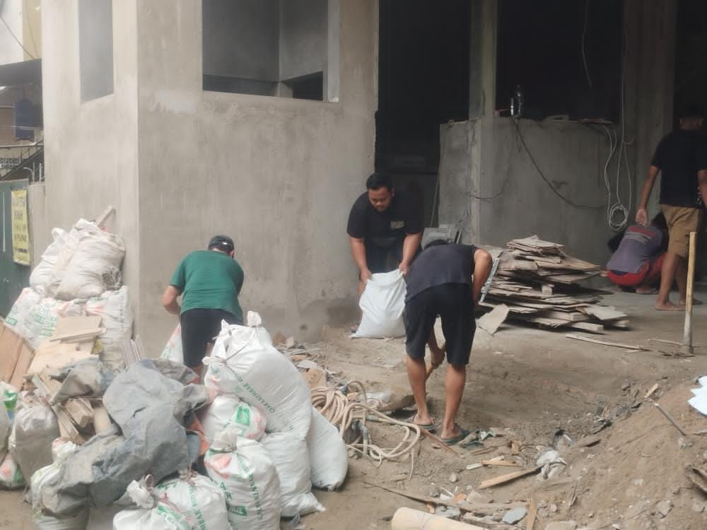
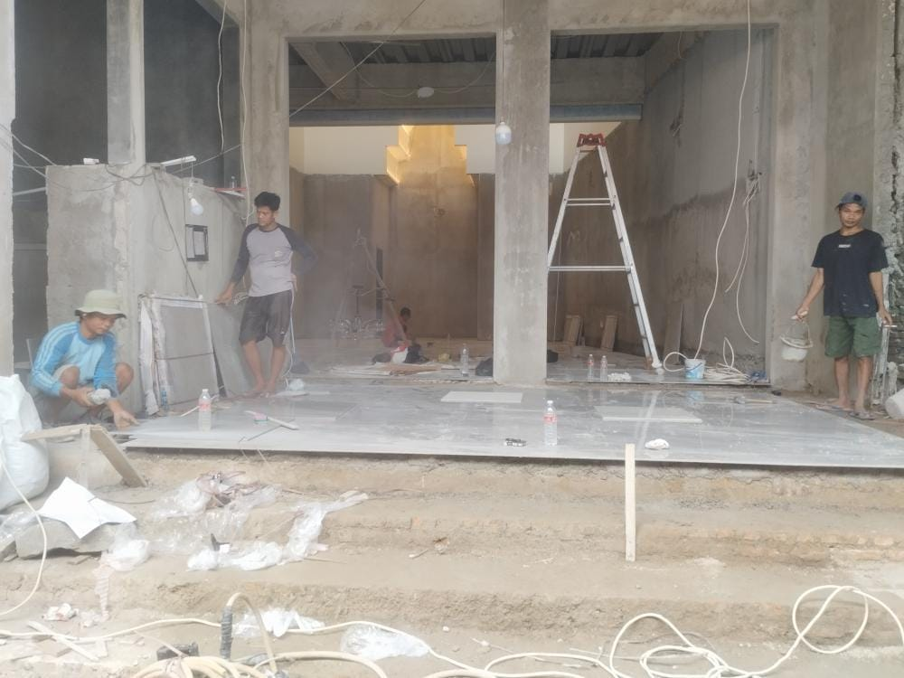
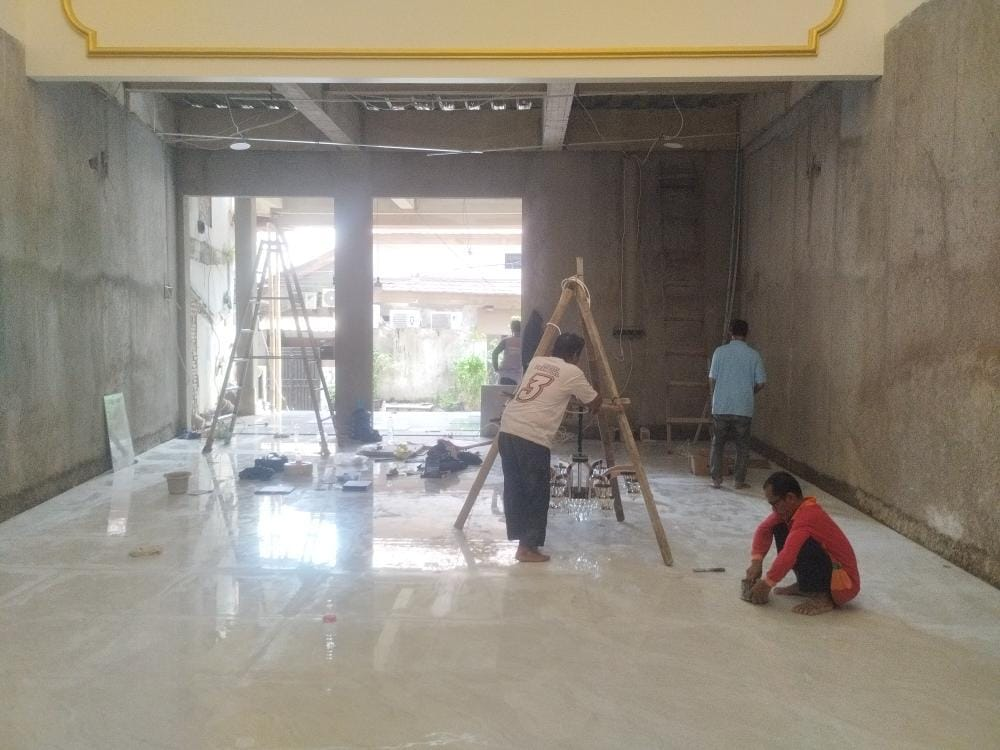
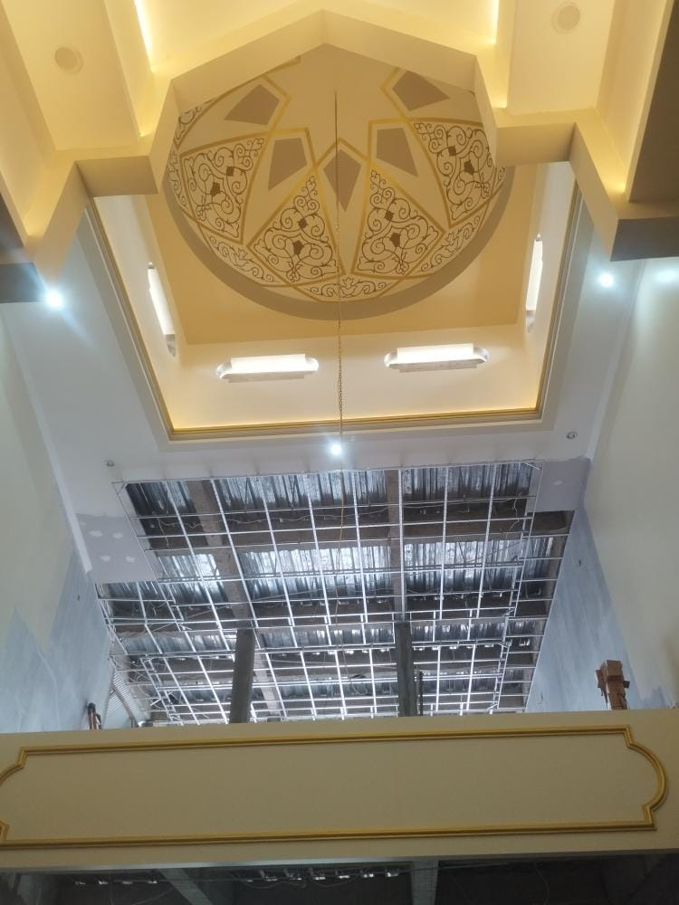
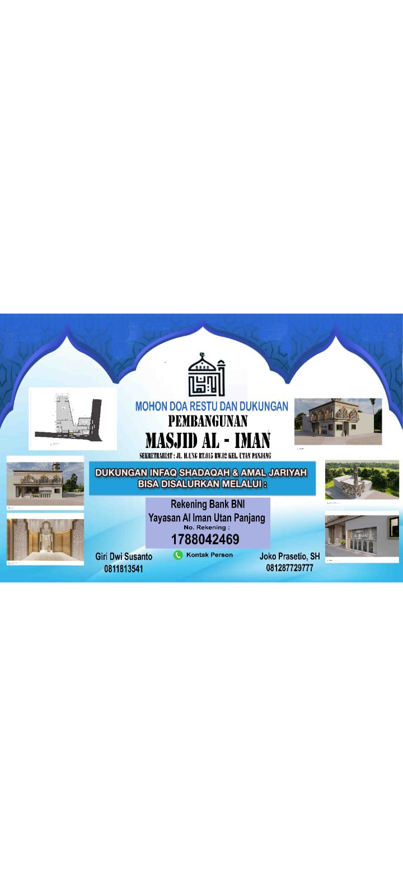

Membangun peradaban umat yang mandiri, berakhlakul karimah, dan sejahtera berlandaskan nilai-nilai Al-Qur'an dan As-Sunnah di jantung Kemayoran.
Mengenal lebih dekat sejarah, visi, dan misi Masjid Al Iman sebagai pusat pembinaan umat.
Masjid Al Iman didirikan sebagai pusat kegiatan spiritual dan muamalah warga RW 02 Utan Panjang. Seiring waktu, masjid terus direnovasi gotong royong untuk menghadirkan fasilitas ibadah yang semakin nyaman dan modern.
Menjadikan Masjid Al Iman sebagai pusat pembinaan umat yang mandiri, berakhlakul karimah, dan sejahtera berlandaskan Al-Qur'an dan As-Sunnah, serta pelopor kerukunan warga Kemayoran.
Agenda rutin majelis taklim, pengajian, dan kegiatan gotong royong jamaah.

Kegiatan majelis taklim dan pembelajaran membaca Al-Qur'an (Tahsin/Tahfidz) bersama para asatidz untuk seluruh kalangan usia.
Dukung Program
Pertemuan rutin pengurus DKM dan jamaah untuk membahas kemajuan program masjid, laporan keuangan, dan agenda pembangunan.
Dukung Program
Pelaksanaan shalat fardhu berjamaah, shalat Jumat, dan majelis dzikir untuk memakmurkan ruang utama masjid yang nyaman.
Dukung ProgramBersama membangun rumah Allah. Dokumentasi terkini renovasi dan perluasan Masjid Al Iman.







Saldo Kas Utama Saat Ini
Total Pemasukan Bulan Ini
Total Pengeluaran Bulan Ini
Mari investasikan harta Anda untuk akhirat. Dukungan Anda sangat berarti untuk operasional, kegiatan dakwah, dan penyelesaian pembangunan Masjid Al Iman.
Giri Dwi Susanto: 0811-8135-41
Joko Prasetio, SH: 0812-8772-9777

Potret kebersamaan dan perkembangan lingkungan Masjid Al Iman.